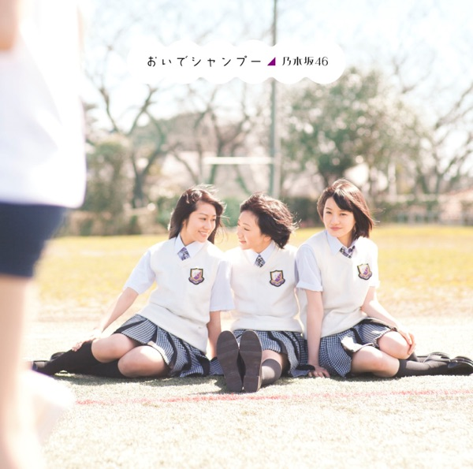

サカミチ
サカミチ狼に口笛をおおかみにくちぶえを

初収録リリース「おいでシャンプー TypeA」のジャケット
乃木坂46
発売日：2012-05-02
収録：おいでシャンプー TypeA（2ndSG）
種別：アンダー曲
センター：伊藤万理華
作曲：Akira Sunset
編曲：シライシ紗トリ
ライブ披露：226件
フォーメーション
上が後列、下が前列です。色付きがセンター。（参考データに基づく）
柏幸奈
安藤美雲
 大和里菜
大和里菜 能條愛未
能條愛未 和田まあや
和田まあや 衛藤美彩
衛藤美彩伊藤寧々
 齋藤飛鳥
齋藤飛鳥 中元日芽香
中元日芽香 樋口日奈
樋口日奈 川後陽菜
川後陽菜 川村真洋
川村真洋 斎藤ちはる
斎藤ちはる 深川麻衣
深川麻衣 伊藤万理華
伊藤万理華 若月佑美
若月佑美参加メンバー（17名）
安藤美雲、伊藤寧々、伊藤万理華、衛藤美彩、柏幸奈、川後陽菜、川村真洋、齋藤飛鳥、斎藤ちはる、中元日芽香、永島聖羅、能條愛未、樋口日奈、深川麻衣、大和里菜、若月佑美、和田まあや
この曲が披露されたライブ（226件）
新しい順に20件まで表示しています（全226件）。